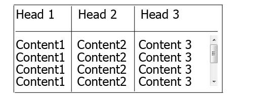
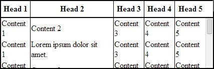
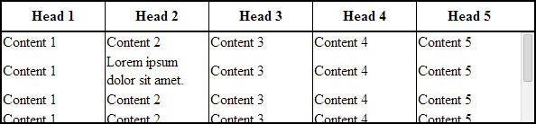
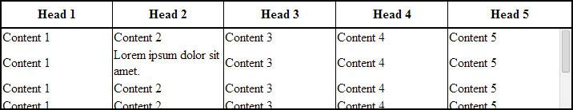
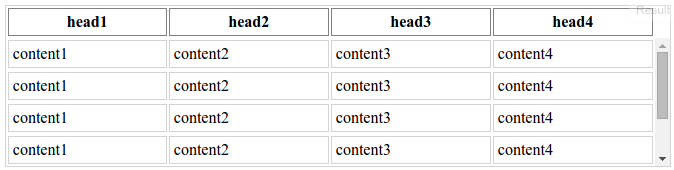

HTML table with 100% width, with vertical scroll inside tbody
How can I set for <table> 100% width and put only inside <tbody> vertical
scroll for some height?

table { width: 100%; display:block; } thead { display: inline-block; width: 100%; height: 20px; } tbody { height: 200px; display: inline-block; width: 100%; overflow: auto; } <table> <thead> <tr> <th>Head 1</th> <th>Head 2</th> <th>Head 3</th> <th>Head 4</th> <th>Head 5</th> </tr> </thead> <tbody> <tr> <td>Content 1</td> <td>Content 2</td> <td>Content 3</td> <td>Content 4</td> <td>Content 5</td> </tr> </tbody> </table>
I want to avoid adding some additional div, all I want is simple table like
this and when I trying to change display, table-layout, position and much
more things in CSS table not working good with 100% width only with fixed
width in px.
Answer
In order to make <tbody> element scrollable, we need to change the way it's
displayed on the page i.e. using display: block; to display that as a block
level element.
Since we change the display property of tbody, we should change that
property for thead element as well to prevent from breaking the table
layout.
So we have:
thead, tbody { display: block; } tbody { height: 100px; /* Just for the demo */ overflow-y: auto; /* Trigger vertical scroll */ overflow-x: hidden; /* Hide the horizontal scroll */ }
Web browsers display the thead and tbody elements as row-group (table-
header-group and table-row-group) by default.
Once we change that, the inside tr elements doesn't fill the entire space of
their container.
In order to fix that, we have to calculate the width of tbody columns and
apply the corresponding value to the thead columns via JavaScript.
Auto Width Columns
Here is the jQuery version of above logic:
// Change the selector if needed var $table = $('table'), $bodyCells = $table.find('tbody tr:first').children(), colWidth; // Get the tbody columns width array colWidth = $bodyCells.map(function() { return $(this).width(); }).get(); // Set the width of thead columns $table.find('thead tr').children().each(function(i, v) { $(v).width(colWidth[i]); });
And here is the output (on Windows 7 Chrome 32) :

W orking demo.
Full Width Table, Relative Width Columns
As the original poster needed, we could expand the table to 100% of width
of its container, and then using a relative ( Percentage ) width for each
columns of the table.
table { width: 100%; /* Optional */ } tbody td, thead th { width: 20%; /* Optional */ }
Since the table has a (sort of) fluid layout , we should adjust the width
of thead columns when the container resizes.
Hence we should set the columns' widths once the window is resized:
// Adjust the width of thead cells when *window* resizes $(window).resize(function() { /* Same as before */ }).resize(); // Trigger the resize handler once the script runs
The output would be:

Working demo.
Browser Support and Alternatives
I've tested the two above methods on Windows 7 via the new versions of major Web Browsers (including IE10+) and it worked.
However, it doesn't work properly on IE9 and below.
That's because in a table layout, all elements should follow the same structural properties.
By using display: block; for the <thead> and <tbody> elements, we've
broken the table structure.
Redesign layout via JavaScript
One approach is to redesign the (entire) table layout. Using JavaScript to create a new layout on the fly and handle and/or adjust the widths/heights of the cells dynamically.
For instance, take a look at the following examples:
- jQuery .floatThead() plugin (a floating/locked/sticky table header plugin)
- jQuery Scrollable Table plugin. (source code on github)
- jQuery .FixedHeaderTable() plugin (source code on github)
- DataTables vertical scrolling example.
Nesting tables
This approach uses two nested tables with a containing div. The first table
has only one cell which has a div, and the second table is placed inside
that div element.
Check the Vertical scrolling tables at CSS Play.
This works on most of web browsers. We can also do the above logic dynamically via JavaScript.
Table with fixed header on scroll
Since the purpose of adding vertical scroll bar to the <tbody> is displaying
the table header at the top of each row, we could position the thead
element to stay fixed at the top of the screen instead.
Here is a Working Demo of this approach performed by Julien. It has a promising web browser support.
And here a pure CSS implementation by Willem Van Bockstal.
The Pure CSS Solution
Here is the old answer. Of course I've added a new method and refined the CSS declarations.
Table with Fixed Width
In this case, the table should have a fixed width (including the sum of
columns' widths and the width of vertical scroll-bar).
Each column should have a specific width and the last column of
thead element needs a greater width which equals to the others' width +
the width of vertical scroll-bar.
Therefore, the CSS would be:
table { width: 716px; /* 140px * 5 column + 16px scrollbar width */ border-spacing: 0; } tbody, thead tr { display: block; } tbody { height: 100px; overflow-y: auto; overflow-x: hidden; } tbody td, thead th { width: 140px; } thead th:last-child { width: 156px; /* 140px + 16px scrollbar width */ }
Here is the output:

WORKING DEMO.
Table with 100% Width
In this approach, the table has a width of 100% and for each th and
td, the value of width property should be less than 100% / number of
cols.
Also, we need to reduce the width of thead as value of the width of
vertical scroll-bar.
In order to do that, we need to use CSS3 calc() function, as follows:
table { width: 100%; border-spacing: 0; } thead, tbody, tr, th, td { display: block; } thead tr { /* fallback */ width: 97%; /* minus scroll bar width */ width: -webkit-calc(100% - 16px); width: -moz-calc(100% - 16px); width: calc(100% - 16px); } tr:after { /* clearing float */ content: ' '; display: block; visibility: hidden; clear: both; } tbody { height: 100px; overflow-y: auto; overflow-x: hidden; } tbody td, thead th { width: 19%; /* 19% is less than (100% / 5 cols) = 20% */ float: left; }
Here is the Online Demo.
Note: This approach will fail if the content of each column breaks the line, i.e. the content of each cell should be short enough.
In the following, there are two simple example of pure CSS solution which I created at the time I answered this question.
Here is the jsFiddle Demo v2.
Old version: jsFiddle Demo v1
Suggest
In following solution, table occupies 100% of the parent container, no absolute sizes required. It's pure CSS, flex layout is used.
Here is how it looks: 
Possible disadvantages:
- vertical scrollbar is always visible, regardless of whether it's required;
- table layout is fixed - columns do not resize according to the content width (you still can set whatever column width you want explicitly);
- there is one absolute size - the width of the scrollbar, which is about 0.9em for the browsers I was able to check.
HTML (shortened):
<div class="table-container"> <table> <thead> <tr> <th>head1</th> <th>head2</th> <th>head3</th> <th>head4</th> </tr> </thead> <tbody> <tr> <td>content1</td> <td>content2</td> <td>content3</td> <td>content4</td> </tr> <tr> <td>content1</td> <td>content2</td> <td>content3</td> <td>content4</td> </tr> ... </tbody> </table> </div>
CSS, with some decorations omitted for clarity:
.table-container { height: 10em; } table { display: flex; flex-flow: column; height: 100%; width: 100%; } table thead { /* head takes the height it requires, and it's not scaled when table is resized */ flex: 0 0 auto; width: calc(100% - 0.9em); } table tbody { /* body takes all the remaining available space */ flex: 1 1 auto; display: block; overflow-y: scroll; } table tbody tr { width: 100%; } table thead, table tbody tr { display: table; table-layout: fixed; }
full code on jsfiddle
Same code in LESS so you can mix it in:
.table-scrollable() { @scrollbar-width: 0.9em; display: flex; flex-flow: column; thead, tbody tr { display: table; table-layout: fixed; } thead { flex: 0 0 auto; width: ~"calc(100% - @{scrollbar-width})"; } tbody { display: block; flex: 1 1 auto; overflow-y: scroll; tr { width: 100%; } } }